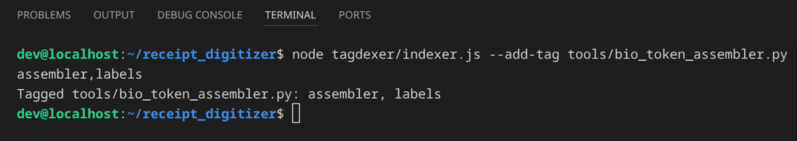
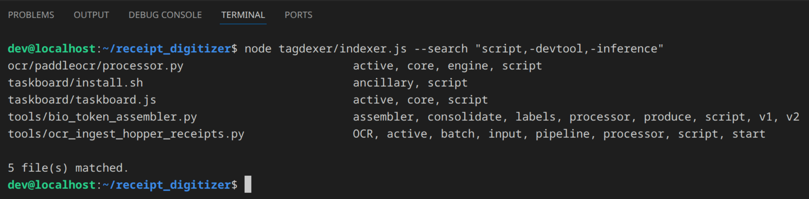
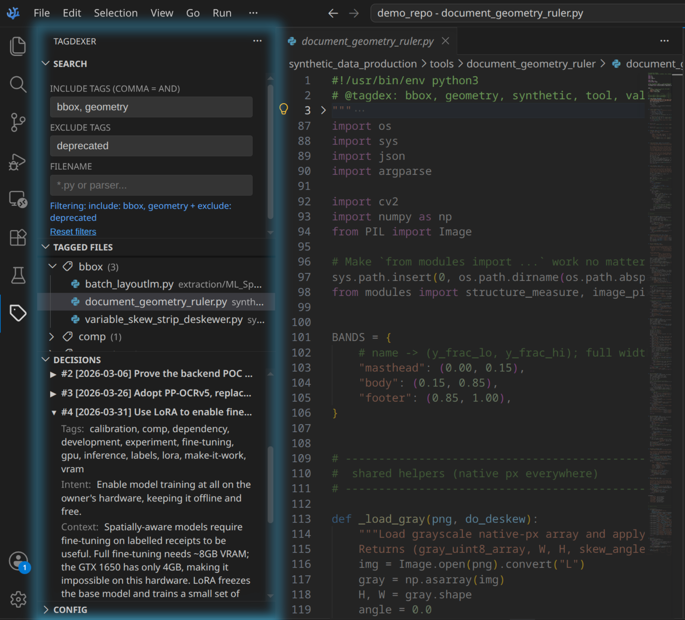

Tagdexer solves the problem of one file needing to be in several places at once by organising files with tags rather than folders. It also keeps a permanent record of design decisions made during a project, along with the circumstances and reasoning behind them at the time. It is built for software developers, though the filing problem it solves is a general one.

Tags let related files cross-reference concepts held in different locations, which folders cannot. Say you scan your passport. You might have a folder called holiday paperwork, another called identification documents, and a third called immigration. With folders, that one passport file can only live in one of the three, excluded from the other two. With tags it belongs to all three at once, so you can retrieve it by searching any of those concepts.

Otherwise the file is missing from the other places you might look for it later, or you keep a copy in each. If it is something you update, like a spreadsheet, you soon lose track of which copy is current.
Tagdexer works best alongside whichever AI agent you already use, which can use the Tagdexer CLI to tag files for you, or find files by tag at your request, far faster than doing it by hand. For anyone already working with agents, this is the recommended method.
Tagdexer is not just a file tagging system. It also records architectural decisions.
What is an architectural decision, and why record it?
Assume you are building something complex, like renovating your home. Your carpenter recommends a taller skirting because the walls behind it are damaged, and you agree because it looks fine either way.
Six months later an electrician explains lower skirting would save him a day chasing new cable through the walls, because he can reach the old power points. You can't remember any reason for the tall boards, so you agree that it will be cheaper to change the skirting and he pulls it off.
You call the carpenter back to fit the shorter boards. He arrives and reminds you the tall skirting was hiding damage that shorter boards won't cover, so the tall boards have to go back on. They can't, because the new power points are now sitting in the way. So the electrician returns to remove the points, the carpenter returns to refit the original tall skirting, and the electrician returns a third time to run the new wiring he avoided in the first place. You pay both trades three times for work that could have been completed once. Roughly $2,000 in avoidable callouts and rework, plus a month's delay, for a decision nobody wrote down.
When a friend asks about your renovation, you easily recall what has changed, but what about why decisions were made? The problem of the damaged wall was important to you at the time, but as the skirting covers it over, so too is it forgotten. With nothing to remind you it once existed, you assume the height of the skirting was only ever a preference.
The height of the skirting board was not purely aesthetic, but an architectural decision, because it set the conditions for decisions made later. It solved a problem that, as a result, was invisible until the previous work was altered.
Tagdexer's decision logging lets developers record and search a decision log which, by default, is append-only, so the record cannot be altered after the fact. Each part of a decision is separately queryable: what was decided, what the intent was, what the context was, and which files were affected. In one request you can find every decision that ever touched a given file.
It is optimised for autonomous AI agent workflows, where agents need to know the intent behind an architecture before they change it, and where they log their own decisions for the next developer or agent. The result is that no part of a project is left ambiguous later.

Requirements
- Node.js 22 or newer
- ripgrep on your
PATH - VSCodium or VS Code 1.85+ — only for the optional sidebar
Getting it
Tagdexer is free software. The source is on GitHub, and the repository is the whole distribution — there is no installer, no store listing and no account.
git clone https://github.com/oisinmcgrath/tagdexer.git